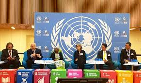
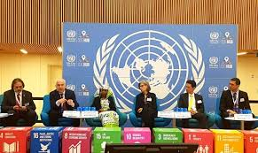

Galeri
SDGs 1
 

✨SDGs 1 - Tanpa Kemiskinan (No Poverty)✨
Hubungan regional adalah kerjasama yang dilakukan antara dua negara atau lebih yang berada di satu kawasan geografis yang sama. Kerjasama ini biasanya didasarkan pada kedekatan geografis, kesamaan sejarah, budaya, atau kepentingan ekonomi dan politik, dengan tujuan untuk memajukan kawasan tersebut.
Organisasi-organisasi di bawah ini merupakan contoh kerja sama antara negara-negara yang berdekatan untuk mencapai tujuan bersama di berbagai bidang seperti ekonomi, sosial, dan politik.
- ASEAN (Association of Southeast Asian Nations): Organisasi regional yang terdiri dari negara-negara di Asia Tenggara, dengan tujuan meningkatkan kerja sama ekonomi, sosial, budaya, dan politik
- APEC (Asia-Pacific Economic Cooperation): Kerjasama ekonomi antara negara-negara di kawasan Asia-Pasifik
- Uni Eropa (EU): Organisasi regional yang beranggotakan negara-negara Eropa, berfokus pada integrasi ekonomi dan politik pasca-Perang Dunia II
- AFTA (ASEAN Free Trade Area): Kerjasama ekonomi yang bertujuan untuk menciptakan pasar bebas di antara negara-negara anggota ASEAN
- NAFTA (North American Free Trade Area): Sekarang digantikan oleh USMCA, merupakan perjanjian perdagangan bebas antara Amerika Serikat, Meksiko, dan Kanada
- SAARC (South Asian Association for Regional Cooperation): Organisasi kerjasama regional di Asia Selatan
- Mercosur (Mercado Común del Sur): Uni dagang di Amerika Selatan
- EAC (East African Community): Organisasi kerjasama ekonomi di Afrika Timur
Hubungan kerjasama regional memiliki tujuan untuk memajukan negara-negara anggota di suatu kawasan melalui peningkatan stabilitas, kesejahteraan ekonomi, dan hubungan persahabatan.
- Memajukan negara anggota → meningkatkan kemajuan negara-negara yang berada dalam satu wilayah atau kawasan.
- Meningkatkan stabilitas kawasan → menjaga perdamaian dan stabilitas di antara negara-negara anggota, contohnya melalui perdamaian di Asia Tenggara yang menjadi tujuan ASEAN
- Menjalin hubungan persahabatan → mempererat hubungan baik dan persahabatan dengan negara-negara tetangga dalam kawasan tersebut
Hubungan kerjasama regional berhubungan dengan SDGs karena kerjasama regional menyediakan platform bagi negara-negara untuk bekerja sama dalam mencapai tujuan pembangunan berkelanjutan (SDGs) melalui dialog, berbagi pengalaman, dan harmonisasi kebijakan. Sebaliknya, pencapaian SDGs juga menjadi salah satu tujuan utama dari kerjasama regional, karena mengatasi tantangan seperti kemiskinan dan perubahan iklim di tingkat regional akan berkontribusi pada stabilitas dan kemakmuran global.